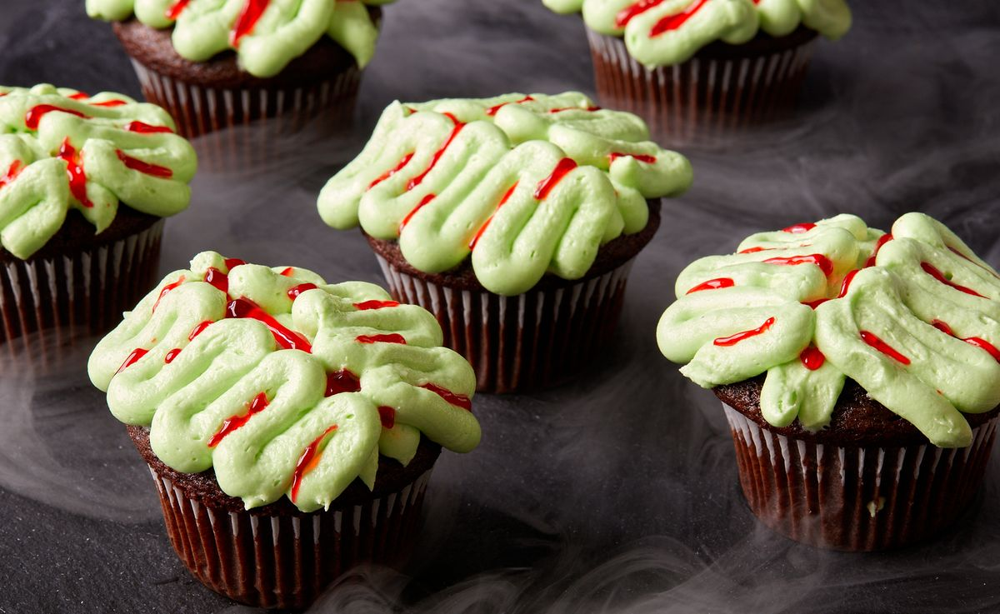

Zombie Brain Cupcakes

Description
Don’t just make plain old cupcakes for your next Halloween bash, make zombie brain cupcakes! They’re nothing more than a moist, chocolate cupcake with rich vanilla frosting, but some neon green food coloring and clever piping turn these into a super-festive, spooky treat. (Oh, and some blood red decorating gel—we're really getting into it.)
he recipe will make a little more frosting than you might need to decorate 12 cupcakes. If you’re left with extra, you can store it in the refrigerator for about 1 week and in the freezer for up to 4 months. Just let it come to room temperature and re-whip it before using on more cupcakes or to sandwich cookies.
Ingredients
-
Cupcakes
- 1 1/4 c. (150 g.) all-purpose flour
- 1 c. (200 g.) granulated sugar
- 1/2 c. (40 g.) unsweetened cocoa powder
- 1 tsp. baking powder
- 1/2 tsp. baking soda
- 1/2 tsp. kosher salt
- 1/2 c. (120 ml.) buttermilk or whole milk
- 1/4 c. neutral oil
- 1 large egg, beaten
- 1/2 tsp. pure vanilla extract
- 1/4 c. boiling water
-
Frosting & Assembly
- 4 c. (455 g.) powdered sugar, sifted
- 1 1/2 c. (3 sticks) unsalted butter, room temperature
- 1 tsp. pure vanilla extract
- 1/4 tsp. kosher salt
- 2 to 3 drops (or more) neon green liquid food coloring
- Red decorating gel, for drizzling
Steps
-
Cupcakes
- Preheat oven to 350°. Line a standard 12-cup muffin tin with liners.
- In a large bowl, whisk flour, granulated sugar, cocoa powder, baking powder, baking soda, and salt. Add buttermilk, oil, egg, and vanilla and whisk until smooth. Pour in boiling water and whisk until fully combined.
- Fill each liner with 1/4 cup (60 ml.) batter, coming about two-thirds up the sides.
- Bake cupcakes until risen and a tester inserted into the center comes out clean, 18 to 20 minutes. Let cool completely, about 1 hour.
-
Frosting & Assembly
- In the large bowl of a stand mixer fitted with the whisk attachment (or in a large bowl using an electric mixer), beat powdered sugar, butter, vanilla, and salt on medium-high speed until frosting is bright white and very smooth, 2 to 3 minutes. Tint frosting with green food coloring and beat until well incorporated, adding more as needed. Transfer to a large piping bag fitted with a small round tip.
- Pipe a small mound (about the size of a quarter) on top of cupcakes. Pipe 2 straight vertical lines, side by side, down middle of cupcakes. Pipe squiggly lines on either side of cupcakes, resembling a brain.
- Drizzle a small amount of red gel onto each cupcake, letting it settle in creases of brain. Refrigerate cupcakes if not serving right away.
Back to Homepage